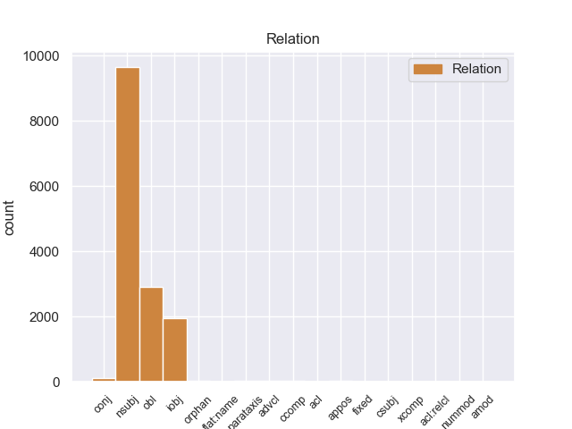
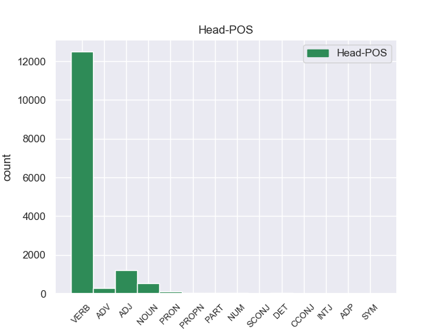
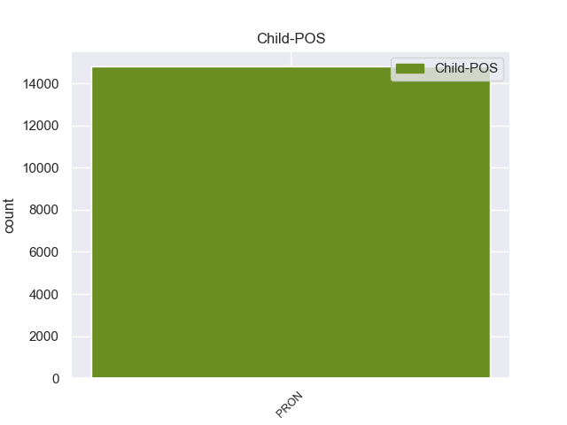

Distribution of features within this leaf



Morphosyntax Rules sorted by frequency.
- When the dependent token is the nominal subject(nsubj) of the head token, and the dependent token is PRON, the Person needs to be 3.
1 Нельзя _ _ _ _ 0 _ _ _
2 дорогам _ _ _ _ 0 _ _ _
3 зарастать _ _ _ _ 0 _ _ _
4 , _ _ _ _ 0 _ _ _
5 - _ _ _ _ 0 _ _ _
6 сказал сказать VERB _ Aspect=Perf|Gender=Masc|Mood=Ind|Number=Sing|Tense=Past|VerbForm=Fin|Voice=Act 0 _ _ _
7 он он PRON _ Case=Nom|Gender=Masc|Number=Sing|Person=3 6 nsubj 6:nsubj _
8 твердо _ _ _ _ 0 _ _ _
9 . _ _ _ _ 0 _ _ _
1 - _ _ _ _ 0 _ _ _
2 У _ _ _ _ 0 _ _ _
3 него он PRON _ Case=Gen|Gender=Masc|Number=Sing|Person=3 4 obl 4:obl _
4 был быть VERB _ Aspect=Imp|Gender=Masc|Mood=Ind|Number=Sing|Tense=Past|VerbForm=Fin|Voice=Act 0 _ _ _
5 вежливый _ _ _ _ 0 _ _ _
6 , _ _ _ _ 0 _ _ _
7 мягкий _ _ _ _ 0 _ _ _
8 и _ _ _ _ 0 _ _ _
9 терпеливый _ _ _ _ 0 _ _ _
10 голос _ _ _ _ 0 _ _ _
11 . _ _ _ _ 0 _ _ _
1 Он _ _ _ _ 0 _ _ _
2 осторожно _ _ _ _ 0 _ _ _
3 , _ _ _ _ 0 _ _ _
4 за _ _ _ _ 0 _ _ _
5 дужку _ _ _ _ 0 _ _ _
6 , _ _ _ _ 0 _ _ _
7 снял _ _ _ _ 0 _ _ _
8 очки _ _ _ _ 0 _ _ _
9 , _ _ _ _ 0 _ _ _
10 ему он PRON _ Case=Dat|Gender=Masc|Number=Sing|Person=3 11 iobj 11:iobj _
11 хотелось хотеться VERB _ Aspect=Imp|Gender=Neut|Mood=Ind|Number=Sing|Tense=Past|VerbForm=Fin|Voice=Mid 0 _ _ _
12 получше _ _ _ _ 0 _ _ _
13 рассмотреть _ _ _ _ 0 _ _ _
14 человека _ _ _ _ 0 _ _ _
15 , _ _ _ _ 0 _ _ _
16 задающего _ _ _ _ 0 _ _ _
17 такие _ _ _ _ 0 _ _ _
18 несуразные _ _ _ _ 0 _ _ _
19 вопросы _ _ _ _ 0 _ _ _
20 , _ _ _ _ 0 _ _ _
21 а _ _ _ _ 0 _ _ _
22 припылившиеся _ _ _ _ 0 _ _ _
23 стекла _ _ _ _ 0 _ _ _
24 только _ _ _ _ 0 _ _ _
25 мешали _ _ _ _ 0 _ _ _
26 . _ _ _ _ 0 _ _ _
1 Я _ _ _ _ 0 _ _ _
2 сказал _ _ _ _ 0 _ _ _
3 бы _ _ _ _ 0 _ _ _
4 им _ _ _ _ 0 _ _ _
5 , _ _ _ _ 0 _ _ _
6 что _ _ _ _ 0 _ _ _
7 это _ _ _ _ 0 _ _ _
8 папина _ _ _ _ 0 _ _ _
9 знакомая знакомая NOUN _ Animacy=Anim|Case=Nom|Gender=Fem|Number=Sing 0 _ _ _
10 и _ _ _ _ 0 _ _ _
11 моя _ _ _ _ 0 _ _ _
12 знакомая _ _ _ _ 0 _ _ _
13 тоже _ _ _ _ 0 _ _ _
14 ; _ _ _ _ 0 _ _ _
15 что _ _ _ _ 0 _ _ _
16 у _ _ _ _ 0 _ _ _
17 нее _ _ _ _ 0 _ _ _
18 негромкий _ _ _ _ 0 _ _ _
19 голос _ _ _ _ 0 _ _ _
20 и _ _ _ _ 0 _ _ _
21 тихий _ _ _ _ 0 _ _ _
22 , _ _ _ _ 0 _ _ _
23 долгий _ _ _ _ 0 _ _ _
24 смех _ _ _ _ 0 _ _ _
25 ; _ _ _ _ 0 _ _ _
26 что _ _ _ _ 0 _ _ _
27 у _ _ _ _ 0 _ _ _
28 нее она PRON _ Case=Gen|Gender=Fem|Number=Sing|Person=3 9 conj 9:conj _
29 теплые _ _ _ _ 0 _ _ _
30 длинные _ _ _ _ 0 _ _ _
31 пальцы _ _ _ _ 0 _ _ _
32 и _ _ _ _ 0 _ _ _
33 когда _ _ _ _ 0 _ _ _
34 она _ _ _ _ 0 _ _ _
35 осторожно _ _ _ _ 0 _ _ _
36 запускает _ _ _ _ 0 _ _ _
37 их _ _ _ _ 0 _ _ _
38 в _ _ _ _ 0 _ _ _
39 волосы _ _ _ _ 0 _ _ _
40 человеку _ _ _ _ 0 _ _ _
41 , _ _ _ _ 0 _ _ _
42 то _ _ _ _ 0 _ _ _
43 человеку _ _ _ _ 0 _ _ _
44 хочется _ _ _ _ 0 _ _ _
45 и _ _ _ _ 0 _ _ _
46 плакать _ _ _ _ 0 _ _ _
47 , _ _ _ _ 0 _ _ _
48 и _ _ _ _ 0 _ _ _
49 смеяться _ _ _ _ 0 _ _ _
50 одновременно _ _ _ _ 0 _ _ _
51 . _ _ _ _ 0 _ _ _
1 А _ _ _ _ 0 _ _ _
2 ответ ответ NOUN _ Animacy=Inan|Case=Nom|Gender=Masc|Number=Sing 0 _ _ _
3 - _ _ _ _ 0 _ _ _
4 вот _ _ _ _ 0 _ _ _
5 он он PRON _ Case=Nom|Gender=Masc|Number=Sing|Person=3 2 appos 2:appos SpaceAfter=No
6 : _ _ _ _ 0 _ _ _
7 все _ _ _ _ 0 _ _ _
8 прежние _ _ _ _ 0 _ _ _
9 попытки _ _ _ _ 0 _ _ _
10 реформ _ _ _ _ 0 _ _ _
11 не _ _ _ _ 0 _ _ _
12 принесли _ _ _ _ 0 _ _ _
13 должного _ _ _ _ 0 _ _ _
14 результата _ _ _ _ 0 _ _ _
15 , _ _ _ _ 0 _ _ _
16 потому _ _ _ _ 0 _ _ _
17 что _ _ _ _ 0 _ _ _
18 не _ _ _ _ 0 _ _ _
19 опирались _ _ _ _ 0 _ _ _
20 на _ _ _ _ 0 _ _ _
21 широкое _ _ _ _ 0 _ _ _
22 развертывание _ _ _ _ 0 _ _ _
23 процессов _ _ _ _ 0 _ _ _
24 демократизации _ _ _ _ 0 _ _ _
25 . _ _ _ _ 0 _ _ _
1 Но _ _ _ _ 0 _ _ _
2 все _ _ _ _ 0 _ _ _
3 полетело _ _ _ _ 0 _ _ _
4 к _ _ _ _ 0 _ _ _
5 черту _ _ _ _ 0 _ _ _
6 в _ _ _ _ 0 _ _ _
7 тот _ _ _ _ 0 _ _ _
8 день _ _ _ _ 0 _ _ _
9 , _ _ _ _ 0 _ _ _
10 когда _ _ _ _ 0 _ _ _
11 , _ _ _ _ 0 _ _ _
12 выслушав _ _ _ _ 0 _ _ _
13 и _ _ _ _ 0 _ _ _
14 выстукав _ _ _ _ 0 _ _ _
15 близнецов _ _ _ _ 0 _ _ _
16 , _ _ _ _ 0 _ _ _
17 дотошно _ _ _ _ 0 _ _ _
18 высмотрев _ _ _ _ 0 _ _ _
19 темные _ _ _ _ 0 _ _ _
20 пленки _ _ _ _ 0 _ _ _
21 рентгеновских _ _ _ _ 0 _ _ _
22 снимков _ _ _ _ 0 _ _ _
23 , _ _ _ _ 0 _ _ _
24 врач _ _ _ _ 0 _ _ _
25 сказал сказать VERB _ Aspect=Perf|Gender=Masc|Mood=Ind|Number=Sing|Tense=Past|VerbForm=Fin|Voice=Act 0 _ _ _
26 : _ _ _ _ 0 _ _ _
27 " _ _ _ _ 0 _ _ _
28 У _ _ _ _ 0 _ _ _
29 них они PRON _ Case=Gen|Number=Plur|Person=3 25 parataxis 25:parataxis _
30 слабые _ _ _ _ 0 _ _ _
31 легкие _ _ _ _ 0 _ _ _
32 , _ _ _ _ 0 _ _ _
33 им _ _ _ _ 0 _ _ _
34 лучше _ _ _ _ 0 _ _ _
35 жить _ _ _ _ 0 _ _ _
36 за _ _ _ _ 0 _ _ _
37 городом _ _ _ _ 0 _ _ _
38 " _ _ _ _ 0 _ _ _
39 . _ _ _ _ 0 _ _ _
1 Когда _ _ _ _ 0 _ _ _
2 ходит _ _ _ _ 0 _ _ _
3 , _ _ _ _ 0 _ _ _
4 от _ _ _ _ 0 _ _ _
When the dependent token is the adverbial clause modifier(advcl) of the head token, and the dependent token is PRON, the Person needs to be 3.
1 Не _ _ _ _ 0 _ _ _
2 может _ _ _ _ 0 _ _ _
3 так так ADV _ Degree=Pos 0 _ _ _
4 существовать _ _ _ _ 0 _ _ _
5 государство _ _ _ _ 0 _ _ _
6 , _ _ _ _ 0 _ _ _
7 чтобы _ _ _ _ 0 _ _ _
8 в _ _ _ _ 0 _ _ _
9 нем оно PRON _ Case=Loc|Gender=Neut|Number=Sing|Person=3 3 advcl 3:advcl _
10 было _ _ _ _ 0 _ _ _
11 тридцать _ _ _ _ 0 _ _ _
12 очагов _ _ _ _ 0 _ _ _
13 жизни _ _ _ _ 0 _ _ _
14 , _ _ _ _ 0 _ _ _
15 а _ _ _ _ 0 _ _ _
16 между _ _ _ _ 0 _ _ _
17 ними _ _ _ _ 0 _ _ _
18 - _ _ _ _ 0 _ _ _
19 тысячи _ _ _ _ 0 _ _ _
20 километров _ _ _ _ 0 _ _ _
21 пустоши _ _ _ _ 0 _ _ _
22 . _ _ _ _ 0 _ _ _
When the dependent token is the clausal complement(ccomp) of the head token, and the dependent token is PRON, the Person needs to be 3.
1 В _ _ _ _ 0 _ _ _
2 другом _ _ _ _ 0 _ _ _
3 углу _ _ _ _ 0 _ _ _
4 жил _ _ _ _ 0 _ _ _
5 милиционер _ _ _ _ 0 _ _ _
6 Федорцов _ _ _ _ 0 _ _ _
7 , _ _ _ _ 0 _ _ _
8 все _ _ _ _ 0 _ _ _
9 время _ _ _ _ 0 _ _ _
10 кашляющий _ _ _ _ 0 _ _ _
11 , _ _ _ _ 0 _ _ _
12 он _ _ _ _ 0 _ _ _
13 говорил говорить VERB _ Aspect=Imp|Gender=Masc|Mood=Ind|Number=Sing|Tense=Past|VerbForm=Fin|Voice=Act 0 _ _ _
14 , _ _ _ _ 0 _ _ _
15 что _ _ _ _ 0 _ _ _
16 у _ _ _ _ 0 _ _ _
17 него он PRON _ Case=Gen|Gender=Masc|Number=Sing|Person=3 13 ccomp 13:ccomp _
18 осколок _ _ _ _ 0 _ _ _
19 в _ _ _ _ 0 _ _ _
20 легком _ _ _ _ 0 _ _ _
21 . _ _ _ _ 0 _ _ _
When the dependent token is the clausal subject(csubj) of the head token, and the dependent token is PRON, the Person needs to be 3.
1 И _ _ _ _ 0 _ _ _
2 потому _ _ _ _ 0 _ _ _
3 , _ _ _ _ 0 _ _ _
4 кто _ _ _ _ 0 _ _ _
5 бы _ _ _ _ 0 _ _ _
6 им он PRON _ Case=Ins|Gender=Masc|Number=Sing|Person=3 11 csubj 11:csubj _
7 ни _ _ _ _ 0 _ _ _
8 был _ _ _ _ 0 _ _ _
9 , _ _ _ _ 0 _ _ _
10 будет _ _ _ _ 0 _ _ _
11 стремиться стремиться VERB _ Aspect=Imp|VerbForm=Inf|Voice=Mid 0 _ _ _
12 к _ _ _ _ 0 _ _ _
13 подавлению _ _ _ _ 0 _ _ _
14 идеологических _ _ _ _ 0 _ _ _
15 и _ _ _ _ 0 _ _ _
16 политических _ _ _ _ 0 _ _ _
17 оппонентов _ _ _ _ 0 _ _ _
18 . _ _ _ _ 0 _ _ _
When the dependent token is the open clausal complement(xcomp) of the head token, and the dependent token is PRON, the Person needs to be 3.
1 Выбрал _ _ _ _ 0 _ _ _
2 бы _ _ _ _ 0 _ _ _
3 Ельцин _ _ _ _ 0 _ _ _
4 Николая _ _ _ _ 0 _ _ _
5 Федорова _ _ _ _ 0 _ _ _
6 , _ _ _ _ 0 _ _ _
7 мы _ _ _ _ 0 _ _ _
8 пытались _ _ _ _ 0 _ _ _
9 бы _ _ _ _ 0 _ _ _
10 понять понять VERB _ Aspect=Perf|VerbForm=Inf|Voice=Act 0 _ _ _
11 , _ _ _ _ 0 _ _ _
12 почему _ _ _ _ 0 _ _ _
12.1 _ _ _ _ _ 0 _ _ _
13 именно _ _ _ _ 0 _ _ _
When the dependent token is the numeric modifier(nummod) of the head token, and the dependent token is PRON, the Person needs to be 3.
1 А _ _ _ _ 0 _ _ _
2 всего _ _ _ _ 0 _ _ _
3 по _ _ _ _ 0 _ _ _
4 стране _ _ _ _ 0 _ _ _
5 - _ _ _ _ 0 _ _ _
6 80 _ _ _ _ 0 _ _ _
7 соединений _ _ _ _ 0 _ _ _
8 и _ _ _ _ 0 _ _ _
9 воинских _ _ _ _ 0 _ _ _
10 частей часть NOUN _ Animacy=Inan|Case=Gen|Gender=Fem|Number=Plur 0 _ _ _
11 ( _ _ _ _ 0 _ _ _
12 из _ _ _ _ 0 _ _ _
13 них они PRON _ Case=Gen|Number=Plur|Person=3 10 nummod 10:nummod _
14 72 _ _ _ _ 0 _ _ _
15 в _ _ _ _ 0 _ _ _
16 структуре _ _ _ _ 0 _ _ _
17 Министерства _ _ _ _ 0 _ _ _
18 обороны _ _ _ _ 0 _ _ _
19 , _ _ _ _ 0 _ _ _
20 3 _ _ _ _ 0 _ _ _
21 в _ _ _ _ 0 _ _ _
22 пограничных _ _ _ _ 0 _ _ _
23 войсках _ _ _ _ 0 _ _ _
24 и _ _ _ _ 0 _ _ _
25 5 _ _ _ _ 0 _ _ _
26 во _ _ _ _ 0 _ _ _
27 внутренних _ _ _ _ 0 _ _ _
28 войсках _ _ _ _ 0 _ _ _
29 ) _ _ _ _ 0 _ _ _
30 . _ _ _ _ 0 _ _ _
When the dependent token is the flat-name(flat:name) of the head token, and the dependent token is PRON, the Person needs to be 3.
1 Но _ _ _ _ 0 _ _ _
2 , _ _ _ _ 0 _ _ _
3 повторяю _ _ _ _ 0 _ _ _
4 , _ _ _ _ 0 _ _ _
5 Бог Бог PROPN _ Animacy=Anim|Case=Nom|Gender=Masc|Number=Sing 0 _ _ _
6 с _ _ _ _ 0 _ _ _
7 ним он PRON _ Case=Ins|Gender=Masc|Number=Sing|Person=3 5 flat:name 5:flat:name SpaceAfter=No
8 . _ _ _ _ 0 _ _ _
When the dependent token is the adjectival clause(acl) of the head token, and the dependent token is PRON, the Person needs to be 3.
1 Но _ _ _ _ 0 _ _ _
2 жизнь _ _ _ _ 0 _ _ _
3 продолжалась _ _ _ _ 0 _ _ _
4 и _ _ _ _ 0 _ _ _
5 вскоре _ _ _ _ 0 _ _ _
6 преподнесла _ _ _ _ 0 _ _ _
7 нам _ _ _ _ 0 _ _ _
8 сюрприз _ _ _ _ 0 _ _ _
9 : _ _ _ _ 0 _ _ _
10 Шурочкина _ _ _ _ 0 _ _ _
11 тетя _ _ _ _ 0 _ _ _
12 , _ _ _ _ 0 _ _ _
13 несмотря _ _ _ _ 0 _ _ _
14 на _ _ _ _ 0 _ _ _
15 то то PRON _ Animacy=Inan|Case=Acc|Gender=Neut|Number=Sing 0 _ _ _
16 что _ _ _ _ 0 _ _ _
17 ей она PRON _ Case=Ins|Gender=Fem|Number=Sing|Person=3 15 acl 15:acl _
18 было _ _ _ _ 0 _ _ _
19 уже _ _ _ _ 0 _ _ _
20 сорок _ _ _ _ 0 _ _ _
21 пять _ _ _ _ 0 _ _ _
22 лет _ _ _ _ 0 _ _ _
23 , _ _ _ _ 0 _ _ _
24 надумала _ _ _ _ 0 _ _ _
25 учиться _ _ _ _ 0 _ _ _
26 в _ _ _ _ 0 _ _ _
27 университете _ _ _ _ 0 _ _ _
28 на _ _ _ _ 0 _ _ _
29 врача _ _ _ _ 0 _ _ _
30 , _ _ _ _ 0 _ _ _
31 для _ _ _ _ 0 _ _ _
32 чего _ _ _ _ 0 _ _ _
33 и _ _ _ _ 0 _ _ _
34 приехала _ _ _ _ 0 _ _ _
35 в _ _ _ _ 0 _ _ _
36 Воронеж _ _ _ _ 0 _ _ _
37 . _ _ _ _ 0 _ _ _
When the dependent token is the adjectival modifier(amod) of the head token, and the dependent token is PRON, the Person needs to be 3.
1 Я _ _ _ _ 0 _ _ _
2 не _ _ _ _ 0 _ _ _
3 играл _ _ _ _ 0 _ _ _
4 с _ _ _ _ 0 _ _ _
5 собой _ _ _ _ 0 _ _ _
6 , _ _ _ _ 0 _ _ _
7 я _ _ _ _ 0 _ _ _
8 действительно _ _ _ _ 0 _ _ _
9 не _ _ _ _ 0 _ _ _
10 видел _ _ _ _ 0 _ _ _
11 ни _ _ _ _ 0 _ _ _
12 его он PRON _ Case=Gen|Gender=Masc|Number=Sing|Person=3 14 amod 14:amod _
13 малого _ _ _ _ 0 _ _ _
14 роста рост NOUN _ Animacy=Inan|Case=Gen|Gender=Masc|Number=Sing 0 _ _ _
15 , _ _ _ _ 0 _ _ _
16 ни _ _ _ _ 0 _ _ _
17 почти _ _ _ _ 0 _ _ _
18 женской _ _ _ _ 0 _ _ _
19 слабости _ _ _ _ 0 _ _ _
20 , _ _ _ _ 0 _ _ _
21 ни _ _ _ _ 0 _ _ _
22 робких _ _ _ _ 0 _ _ _
23 , _ _ _ _ 0 _ _ _
24 неумелых _ _ _ _ 0 _ _ _
25 рук _ _ _ _ 0 _ _ _
26 . _ _ _ _ 0 _ _ _
non-conforming Examples:
1 - _ _ _ _ 0 _ _ _
2 Да _ _ _ _ 0 _ _ _
3 , _ _ _ _ 0 _ _ _
4 я я PRON _ Case=Nom|Number=Sing|Person=1 6 nsubj 6:nsubj _
5 вас _ _ _ _ 0 _ _ _
6 слушаю слушать VERB _ Aspect=Imp|Mood=Ind|Number=Sing|Person=1|Tense=Pres|VerbForm=Fin|Voice=Act 0 _ _ _
7 , _ _ _ _ 0 _ _ _
8 - _ _ _ _ 0 _ _ _
9 сказал _ _ _ _ 0 _ _ _
10 он _ _ _ _ 0 _ _ _
11 , _ _ _ _ 0 _ _ _
12 продолжая _ _ _ _ 0 _ _ _
13 писать _ _ _ _ 0 _ _ _
14 . _ _ _ _ 0 _ _ _
1 - _ _ _ _ 0 _ _ _
2 Я я PRON _ Case=Nom|Number=Sing|Person=1 3 nsubj 3:nsubj _
3 была быть VERB _ Aspect=Imp|Gender=Fem|Mood=Ind|Number=Sing|Tense=Past|VerbForm=Fin|Voice=Act 0 _ _ _
4 у _ _ _ _ 0 _ _ _
5 вас _ _ _ _ 0 _ _ _
6 неделю _ _ _ _ 0 _ _ _
7 тому _ _ _ _ 0 _ _ _
8 назад _ _ _ _ 0 _ _ _
9 по _ _ _ _ 0 _ _ _
10 вопросу _ _ _ _ 0 _ _ _
11 устройства _ _ _ _ 0 _ _ _
12 на _ _ _ _ 0 _ _ _
13 работу _ _ _ _ 0 _ _ _
14 . _ _ _ _ 0 _ _ _
1 - _ _ _ _ 0 _ _ _
2 Я _ _ _ _ 0 _ _ _
3 была быть VERB _ Aspect=Imp|Gender=Fem|Mood=Ind|Number=Sing|Tense=Past|VerbForm=Fin|Voice=Act 0 _ _ _
4 у _ _ _ _ 0 _ _ _
5 вас вы PRON _ Case=Gen|Number=Plur|Person=2 3 obl 3:obl _
6 неделю _ _ _ _ 0 _ _ _
7 тому _ _ _ _ 0 _ _ _
8 назад _ _ _ _ 0 _ _ _
9 по _ _ _ _ 0 _ _ _
10 вопросу _ _ _ _ 0 _ _ _
11 устройства _ _ _ _ 0 _ _ _
12 на _ _ _ _ 0 _ _ _
13 работу _ _ _ _ 0 _ _ _
14 . _ _ _ _ 0 _ _ _
1 Вы вы PRON _ Case=Nom|Number=Plur|Person=2 2 nsubj 2:nsubj _
2 взяли брать VERB _ Aspect=Perf|Mood=Ind|Number=Plur|Tense=Past|VerbForm=Fin|Voice=Act 0 _ _ _
3 мою _ _ _ _ 0 _ _ _
4 автобиографию _ _ _ _ 0 _ _ _
5 и _ _ _ _ 0 _ _ _
6 анкету _ _ _ _ 0 _ _ _
7 и _ _ _ _ 0 _ _ _
8 предложили _ _ _ _ 0 _ _ _
9 мне _ _ _ _ 0 _ _ _
10 прийти _ _ _ _ 0 _ _ _
11 сегодня _ _ _ _ 0 _ _ _
12 … _ _ _ _ 0 _ _ _
1 Вы _ _ _ _ 0 _ _ _
2 взяли _ _ _ _ 0 _ _ _
3 мою _ _ _ _ 0 _ _ _
4 автобиографию _ _ _ _ 0 _ _ _
5 и _ _ _ _ 0 _ _ _
6 анкету _ _ _ _ 0 _ _ _
7 и _ _ _ _ 0 _ _ _
8 предложили предложить VERB _ Aspect=Perf|Mood=Ind|Number=Plur|Tense=Past|VerbForm=Fin|Voice=Act 0 _ _ _
9 мне я PRON _ Case=Dat|Number=Sing|Person=1 8 iobj 8:iobj _
10 прийти _ _ _ _ 0 _ _ _
11 сегодня _ _ _ _ 0 _ _ _
12 … _ _ _ _ 0 _ _ _